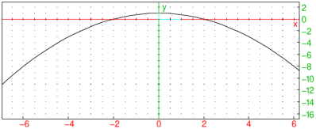

25.3.2 Defining a random point in three-dimensions
The point3d
command defines a random point whose coordinates are integers between −5 and 5.
-
point3d takes names, a sequence of names for the points.
- point3d(names) assigns a random
point whose coordinates are integers between −5 and 5 to each name.
Example
then:
